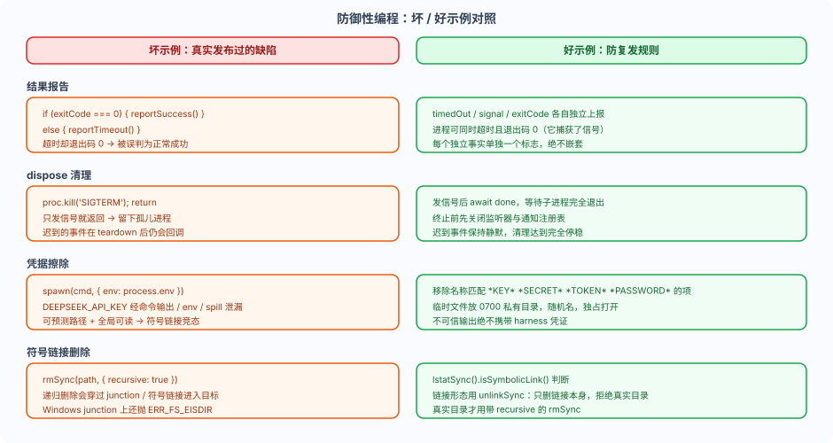

DeeSeek Harness 防御的プログラミング：結果報告、クリーンアップと資格情報
これだけ多くのプラグインを書いていると、「普段はテストで検出できず、本番に出した途端に問題が起きる」という種類の境界バグに遭遇するかもしれません。
公式ドキュメントはこれらを「苦労して得た欠陥カテゴリのルール」としてまとめています。それぞれが実際にリリースされた、またはリリースされかけた欠陥です。
この記事では、最も重要な5つの防御的プログラミングパターン、すなわち結果報告、dispose の完全停止、資格情報の消去、リンク削除、コールバックの隔離について説明します。
一言で言えば、これらのパターンは「単純な境界ケースがAgent全体をクラッシュさせる」のを防ぎます。
まず対照図を見る
下の図は悪い例と良い例を並べて比較しています。各項目は実際の欠陥カテゴリに由来します。

公式はこれらのパターンを、「ライフサイクル、並行処理、子プロセス、クリーンアップのコードを書く前に必ず読むべき」ルールと位置づけています。
直交する結果は独立して報告する
1つの結果は同時に複数の性質を持ち得ます。プロセスがタイムアウトしても、終了シグナルを捕捉したために終了コード0で終了することがあります。
それぞれの独立した事実（timedOut、signal、exitCode）はそれぞれ単独で報告すべきです。
あるフラグの報告を別のフラグの分岐の中にネストしてはいけません。そうしないと、呼び出し側が早期終了した実行を正常成功と誤判定する可能性があります。
例
// 子プロセスを実行し、timedOut、signal、exitCode の3つの独立した事実を直交的に報告する。
import { spawn, type ChildProcess } from 'node:child_process'
export interface RunResult {
timedOut: boolean // 独立した事実 1: タイムアウトしたかどうか
signal: NodeJS.Signals | null // 独立した事実 2: シグナルで終了したかどうか
exitCode: number | null // 独立した事実 3: 終了コード
stdout: string
stderr: string
}
export function run(argv: string[], timeoutMs: number): Promise<RunResult> {
return new Promise((resolve, reject) => {
const child: ChildProcess = spawn(argv[0], argv.slice(1), {
stdio: ['ignore', 'pipe', 'pipe'],
})
let stdout = ''
let stderr = ''
child.stdout.on('data', (d: Buffer) => (stdout += d))
child.stderr.on('data', (d: Buffer) => (stderr += d))
// 独立した事実 1 は単独で管理: タイムアウトは終了コードとは無関係のフラグである。
let timedOut = false
const timer = setTimeout(() => {
timedOut = true
child.kill('SIGTERM') // タイムアウトにより終了をトリガー
}, timeoutMs)
child.on('close', (code, signal) => {
clearTimeout(timer)
// 3つのフィールドはそれぞれ独立して返される: プロセスは timedOut=true かつ exitCode=0 の可能性がある。
// なぜなら、タイムアウト後にSIGTERMを捕捉して終了コード0で終了したからである。
resolve({ timedOut, signal, exitCode: code, stdout, stderr })
})
child.on('error', reject)
})
}
この書き方なら、呼び出し側は組み合わせて判断できます：timedOutが真だがexitCodeが 0 の場合、「強制終了されたが、プロセスは 0 で隠蔽した」ことを示します。
ネストして報告すると、この組み合わせは永遠に表現できません。
dispose は完全に停止しなければならない
クリーンアップ処理が終了または中止のシグナルを送るだけで戻り、作業が実際に停止するのを待たないと、孤児プロセスが残ります。
クリーンアップロジックは非同期フローを採用し、子プロセスの終了を待つべきです（終了シグナルを送った後に待つdone）。
また、プロセスを終了する前にリスナーレジストリと通知レジストリを閉じ、遅れて到着する完了イベントを静かにする必要があります。
例
// dispose は完全に停止しなければならない: シグナルを送るだけで戻るのではなく、シグナル送信後に子プロセスの終了を待つ。
import { once } from 'node:events'
import type { ChildProcess } from 'node:child_process'
export async function disposeQuiescent(child: ChildProcess): Promise<void> {
// 1. まずリスナーを削除し、遅れて到着する完了イベントを静かにする。
child.removeAllListeners()
// 2. 停止を要求: 終了シグナルを送る。
child.kill('SIGTERM')
// 3. 子プロセスが実際に終了するのを待つ; タイムアウトしても終了しない場合は SIGKILL にエスカレーションする。
// Promise.race により、dispose が終了しない子プロセスによって永久にブロックされないことを保証する。
const forceKill = new Promise<void>((resolve) => {
setTimeout(() => {
child.kill('SIGKILL')
resolve()
}, 5_000)
})
await Promise.race([once(child, 'exit').then(() => undefined), forceKill])
}
こうすることで、dispose が戻る時点で、子プロセスは終了しているか、SIGKILL で強制終了されているかのどちらかになります。
資格情報の消去：環境変数を信頼できない出力に絶対にさらさない
起動するコマンドは、クリーンアップ済みの環境変数を使用し、名前が一致する*KEY*、*SECRET*、*TOKEN* 或 *PASSWORD**KEY* *SECRET* *TOKEN* *PASSWORD* の項目を除去する。
そうしないと、harness の資格情報がコマンド出力、envまたは spill ファイルから漏洩する可能性があります。
一時ファイルと spill ファイルは、パーミッションが 0700 のプライベートディレクトリに置き、ランダムなファイル名を使用し、排他的かつ所有者のみがアクセスできる方法で開く必要があります（'wx'、0o600）。
例
// コマンド起動前に環境変数をクリーンアップし、harness の資格情報がコマンド出力や env 経由で漏れるのを防ぐ。
// *KEY* *SECRET* *TOKEN* *PASSWORD* に一致する機微項目はすべて削除する。
const SENSITIVE_NAME = /.*(?:KEY|SECRET|TOKEN|PASSWORD).*/i
export function scrubEnv(env: NodeJS.ProcessEnv): Record<string, string> {
const clean: Record<string, string> = {}
for (const [key, value] of Object.entries(env)) {
if (SENSITIVE_NAME.test(key)) continue // 機微キーは直接スキップ
if (value !== undefined) clean[key] = value
}
return clean
}
// 使用法: spawn(argv
runoob 環境では、
DEEPSEEK_API_KEYこの種の変数は必ずこの消去パスを通る必要があります。コマンド出力、
envまたは spill ファイルにそれを持たせることは、出力を読めるあらゆるオブジェクトに鍵を渡すことと等しい。
シンボリックリンクは unlink で削除する
シンボリックリンクまたは Windows junction の可能性があるパスは、まずlstatSync().isSymbolicLink()判断し、次にunlinkSync削除します。
unlink はリンク自体だけを削除し、実ディレクトリを拒否するため、リンクを辿ってそのターゲットに入ることは決してありません。
Windows で junction に対して呼び出すとrmSync(link)例外がスローされ、ERR_FS_EISDIR再帰削除は junction を越えてそのターゲットに入る可能性があります。
実際のディレクトリの場合のみ、… 付きrecursive 的 rmSync。
例
// リンク形式のパスは unlink で削除し、決してリンクを再帰的に追ってターゲットに入らない。
import { lstatSync, rmSync, unlinkSync } from 'node:fs'
export function removePath(p: string): void {
// まずシンボリックリンク（または Windows junction）かどうかを判断する。
if (lstatSync(p).isSymbolicLink()) {
// unlink はリンク自体のみを削除し、実際のディレクトリを拒否するため、リンクを追わない。
unlinkSync(p)
return
}
// 実際のディレクトリであることを確認した後でのみ、recursive 付きの rmSync を使用する。
rmSync(p, { recursive: true })
}
ディスパッチャーでコールバック例外を隔離する
ユーザーが提供したリスナーが例外をスローした場合、それが属する promise を reject にしてはならず、後続のリスナーを飢えさせてもいけません。
try/catch でディスパッチループを包み、ログを記録してください。
行儀の悪いサブスクライバーがコアライフサイクルを壊してはなりません。
例
// ディスパッチャーはコールバック例外を隔離する: 悪いサブスクライバーがコアライフサイクルを壊せないようにする。
export function dispatch(listeners: ReadonlyArray<() => void>): void {
for (const listener of listeners) {
try {
listener()
} catch (err) {
// ログを記録してディスパッチを続行し、決して reject せず、後続のリスナーを飢えさせない。
console.error('[dispatch] a listener failed:', err)
}
}
}
このパターンは dsh 内部の至る所で見られます：session/eventのオブザーバーの失敗は記録され隔離され、コミット済みの append を失敗させることはありません。
それは、「あるプラグインがリスナーを壊しても、Agent ループ全体が停止しない」ことを保証します。
その他のパターン一覧
公式ドキュメントにはさらに2つのルールが記録されており、覚えておく価値があります：
| パターン | ルール |
|---|---|
| 公開規約は両側で遵守する | 同じ結果の複数の表現を受け取った場合、公開 API から返す前に正規化すべきです。消費側は、例外が提供元、ラッパー層、自身の組み立てロジックのどこから来たのかを推測する必要はありません。 |
| 非同期状態は同期状態ではない | …をagent/status 或 whenIdle()ある run のfollowup()結果として扱ってはいけません。本当に一度の実行を所有する呼び出し側は、区間を明示的に定義しなければなりません。 |
これらのルールのテスト対応面（実際の入口パス、実際の結果の検証、リソースの所有権）は testing.md で詳述されており、次の記事で言及されます。
まとめと自己チェック
防御的プログラミングは、「境界で失敗しやすい」落とし穴を事前に塞ぎます：結果の直交報告、dispose の完全停止、資格情報の消去、リンクの安全な削除、コールバック例外の隔離。
自己チェック問題：
| 問題 | 参考 |
|---|---|
| プロセスがタイムアウトしたが終了コードが 0 の場合、何を意味しますか？ | それは終了シグナルを捕捉し、自ら終了コード 0 で終了した可能性があります。timedOut と exitCode は2つの独立した事実です。 |
| 子プロセスのクリーンアップ時にSIGTERMを送るだけで戻る場合、リスクは何ですか？ | 孤児プロセスが残る；終了を待つべきで、タイムアウトしたらSIGKILLに切り替える |
| シンボリックリンクの可能性があるパスを削除するには、何を使う？ | まずlstatSyncで判定し、次にunlinkSyncを使う；実際のディレクトリの場合のみrmSync recursiveを使う |
クリックしてノートを共有
<p style="font-size:14px;">ノートはこの記事の内容を拡張したものでなければなりません！</p><br> <p style="font-size:12px;"><a href="../tougao.html" target="_blank">記事投稿は、こちらをクリック</a></p> <p style="font-size:14px;"><a href="../w3cnote/runoob-user-test-intro.html" target="_blank">招待コードの取得方法</a></p> <h3 class="text-muted"><i class="fa fa-info-circle" aria-hidden="true"></i> ノートを共有する前に<a href=";.html" class="runoob-pop">ログイン</a>が必要です！</h3> <p><a href="../w3cnote/runoob-user-test-intro.html" target="_blank">招待コードの取得方法</a></p>